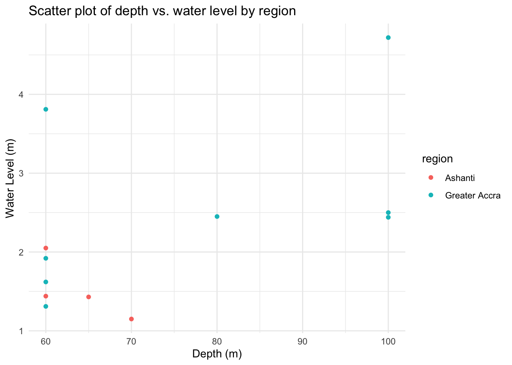

The goal of hydrogeologicalghana is to provide data on boreholes collected to study the hydrogeological dynamics in the greater Accra and Ashanti regions of Ghana.
Installation
You can install the development version of hydrogeologicalghana from GitHub with:
# install.packages("devtools")
devtools::install_github("openwashdata/hydrogeologicalghana")Alternatively, you can download the individual datasets as a CSV or XLSX file from the table below.
- Click Download CSV. A window opens that displays the CSV in your browser.
- Right-click anywhere inside the window and select “Save Page As…”.
- Save the file in a folder of your choice.
| dataset | CSV | XLSX |
|---|---|---|
| hydrogeologicalghana | Download CSV | Download XLSX |
Data
The package provides access to measurements of pumping tests that were systematically conducted at boreholes to assess crucial hydrogeological parameters, specifically focusing on pumping rates and drawdown.
library(hydrogeologicalghana)hydrogeologicalghana
The dataset hydrogeologicalghana contains data about pumping tests that were systematically conducted at boreholes to assess crucial hydrogeological parameters, specifically focusing on pumping rates and drawdown in the greater Accra and Ashanti regions of Ghana. It has 12 observations and 10 variables
hydrogeologicalghana |>
head(3) |>
gt::gt() |>
gt::as_raw_html()| date | region | community | depth | static_water_level | pumping_rate | drawdown | specific_capacity | transmissivity | aquifer_material |
|---|---|---|---|---|---|---|---|---|---|
For an overview of the variable names, see the following table.
| variable_name | variable_type | description |
|---|---|---|
| date | c(“POSIXct”, “POSIXt”) | Date of the measurement. |
| region | character | Name of the region where the borehole was drilled. |
| community | character | Name of the community where the borehole was drilled. |
| depth | numeric | Vertical distance from the surface of the ground to the bottom of the borehole, measured in meters (m). The depth of a borehole determines how deep the drilling process goes to reach the desired aquifer or geological layer. |
| static_water_level | numeric | Llevel of water in the borehole when no pumping is taking place. It is measured from the ground surface down to the water surface inside the borehole. This measurement is crucial for determining the natural water table level and the initial conditions of the aquifer. |
| pumping_rate | numeric | Volume of water being extracted from the borehole per unit of time, typically measured in liters per minute (l/min). This rate is essential for determining the efficiency and capacity of the borehole, as well as for designing the pump system. |
| drawdown | numeric | Difference between the static water level and the water level in the borehole after pumping has started. It indicates how much the water level has dropped due to pumping and is measured in meters (m). Drawdown helps in understanding the impact of pumping on the aquifer and is essential for calculating the sustainable yield of the borehole. |
| specific_capacity | numeric | Measure of the productivity of a borehole, defined as the pumping rate per unit drawdown. It is expressed in terms of volume per unit time per unit drawdown, commonly m_/day per meter of drawdown, which can be simplified to m_/day. This parameter helps in assessing the efficiency of the borehole and the aquifer’s ability to transmit water to the borehole. |
| transmissivity | numeric | Measure of how much water can be transmitted horizontally through the aquifer material over a unit width and is measured in cubic meters per day (m_/day). It is a product of the hydraulic conductivity of the aquifer and the saturated thickness of the aquifer. High transmissivity indicates a highly productive aquifer. |
| aquifer_material | character | Type of geological materials (such as sand, gravel, limestone, or sandstone) that make up the aquifer from which the borehole extracts water. The characteristics of these materials, including their porosity and permeability, influence the aquifer’s ability to store and transmit water. Understanding the aquifer material is critical for assessing the water quality and the potential yield of the borehole. |
Example
library(hydrogeologicalghana)
library(dplyr)
# Summary statistics by region
region_summary <- hydrogeologicalghana |>
group_by(region) |>
summarise(
count = n(),
avg_depth = mean(depth, na.rm = TRUE),
max_pump_rate = max(pumping_rate, na.rm = TRUE),
min_water_level = min(static_water_level, na.rm = TRUE)
)
# Print the formatted table
kable(region_summary,
caption = "Summary Statistics by Region",
align = "c",
col.names = c("Region",
"Count",
"Average depth",
"Max. pump rate",
"Min. water level"))| Region | Count | Average depth | Max. pump rate | Min. water level |
|---|---|---|---|---|
| Ashanti | 4 | 63.75 | 25 | 1.15 |
| Greater Accra | 8 | 77.50 | 35 | 1.31 |
Summary Statistics by Region
library(hydrogeologicalghana)
library(ggplot2)
# Scatter plot
scatter_plot <- hydrogeologicalghana |>
ggplot(aes(x = depth, y = static_water_level, color = region)) +
geom_point() +
labs(title = "Scatter plot of depth vs. water level by region",
x = "Depth (m)",
y = "Water Level (m)") +
theme_minimal()
# Display the scatter plot
print(scatter_plot)
License
Data are available as CC-BY.
Citation
Please cite this package using:
citation("hydrogeologicalghana")
#> To cite package 'hydrogeologicalghana' in publications use:
#>
#> Addae-Mensah B, Tilley E, Clavijo Daza A (????).
#> _hydrogeologicalghana: Hydrogeological Dynamics Data in Ghana_. R
#> package version 0.0.0.9000.
#>
#> A BibTeX entry for LaTeX users is
#>
#> @Manual{,
#> title = {hydrogeologicalghana: Hydrogeological Dynamics Data in Ghana},
#> author = {Benedict Addae-Mensah and Elizabeth Tilley and Adriana {Clavijo Daza}},
#> note = {R package version 0.0.0.9000},
#> }